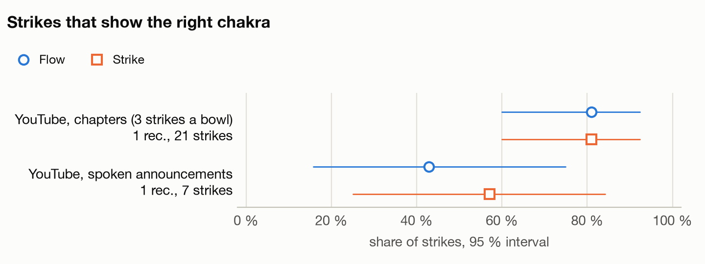
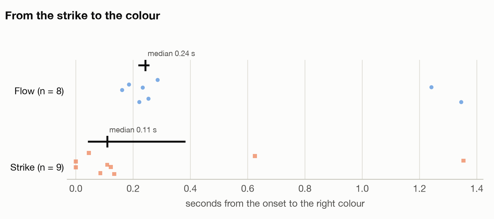
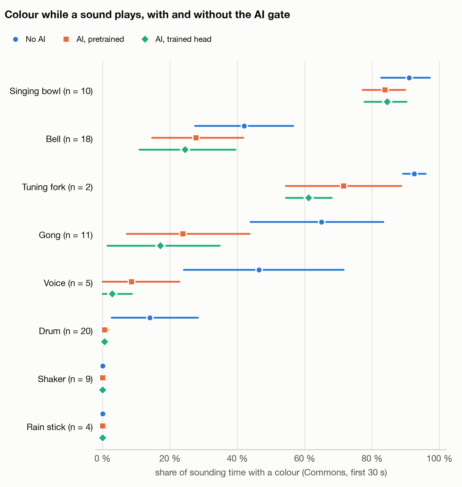
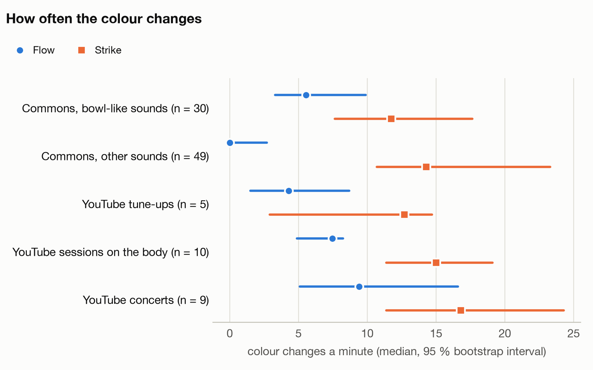
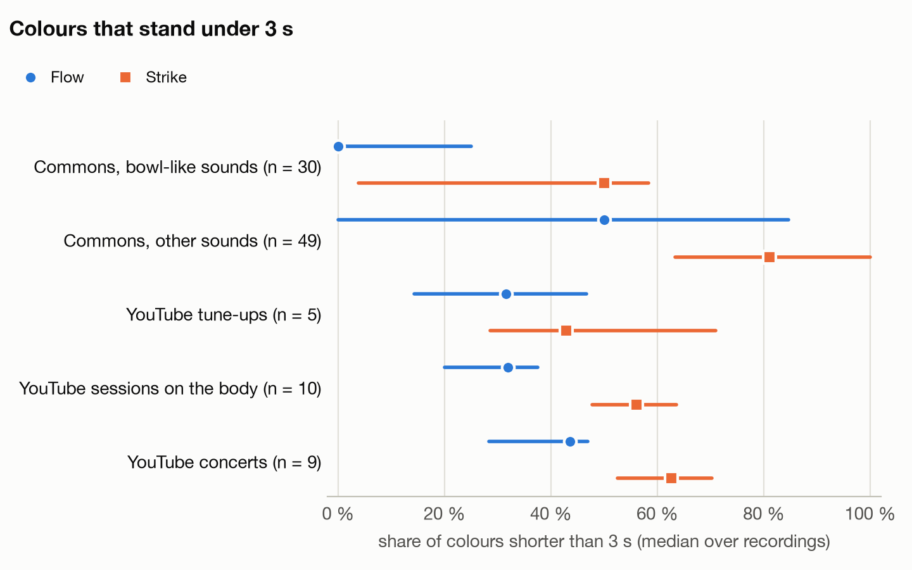

Every number carries its n. Intervals are 95 % percentile bootstrap intervals over recordings (10000 draws, seed 26102026): recordings, not strikes or windows, are the independent unit.
| Set | Recordings | Hours | What | Data list hash |
|---|---|---|---|---|
| Wikimedia Commons clips | 79 | 0.82 | free licences, 8 classes (fetch_clips.py) | b89c100897ac |
| YouTube videos | 24 | 4.49 | tune-ups, sessions on the body, concerts; not redistributed | 5d0a01aee0ea |
| Own recordings | 20 | 0.61 | the owner's rounds and sessions; private, counted only | 957e45784bd5 |
Left out as duplicates: CPlC2404Ils (the same audio as u1KjQTAHSlo under another channel, shifted by 1.7 s). Commons clips are single recordings of one instrument, not sessions; the YouTube and own sessions are the nearest thing to a room.
Data cleaning: 17 entries of the Commons source lists are recordings of someone saying the word ('shaker', 'gong', 'maraca': Lingua Libre and Wiktionary pronunciations), not the instrument; they are left out (fetch_clips.PRONUNCIATION). Up to 25 October 2026, 12 such files were counted among the benchmark's 91 clips (11 as shakers, 1 as a gong).
chakra_detect.c through tests/analyse_wav.c, built into the run folder), notes at A = 440 Hz, sensitivity 8. Flow locks a tone after 384 ms and switches after 1500 ms; Strike after 128 and 256 ms. Both have the strike path (spectral flux) that lets a new bowl take over a louder ringing one.| Source | Chakra from | Strike time from | Reliability |
|---|---|---|---|
| Own rounds, hand-marked | a person marked each strike and its bowl (frames, or flux onsets checked against a contact sheet) | the flux onset found by the order alignment, when it lies within 1.6 s of the mark | chakra high; time high where the marks were checked (see validation) |
| Own rounds, derived | the seven bowls are struck root to crown (the owner's set, tuned C3 to B3) | onsets aligned to that order by dynamic programming: each bowl takes the onset where its fundamental gained most new energy | chakra high; time medium, validated on the round with checked marks |
| YouTube, chapters (-ar9vsmFhJU) | the player's chapter list, root to crown, 'each bowl is struck 3 times' | the 3 strongest onsets of each chapter, at least 4 s apart | chakra high; time medium |
| YouTube, announced (u1KjQTAHSlo) | automatic captions: the seller names each bowl's chakra and note | the strongest onset after the sentence and before the next one | chakra high; time medium |
| YouTube, crystal chapters (8Qhh2VF1Oz4) | chapter numbers read as chakra numbers, as the description says | none (bowls rung on): only the share of chapter time with the intended colour | medium |
Validation of the derived strike times: the order alignment, run without the marks, against the hand marks of the two marked rounds.
| Round | Strikes | Median offset | Largest | Within 0.1 s | Marks from |
|---|---|---|---|---|---|
| own round 1 | 7 | 1.12 s | 1.53 s | 0 of 7 | marks from 1 fps frames |
| own round 2 | 7 | 0.03 s | 0.04 s | 7 of 7 | checked marks |
Where the marks were checked against the flux, the alignment finds the same strikes within a few hundredths of a second; where they came from video frames at one a second, the frames lag the sound by up to 1.5 s, so those marks give the bowl but not the time.
| Ground truth | Mode | Recordings | Strikes | Right | Accuracy [95 % CI] | First colour right | Latency, median [95 % CI] |
|---|---|---|---|---|---|---|---|
| YouTube, chapters (3 strikes a bowl) | Flow | 1 | 21 | 17 of 21 | 81 % | 81 % | 0.22 s (n = 5) |
| YouTube, chapters (3 strikes a bowl) | Strike | 1 | 21 | 17 of 21 | 81 % | 76 % | 0.05 s (n = 5) |
| YouTube, spoken announcements | Flow | 1 | 7 | 3 of 7 | 43 % | 43 % | 0.25 s (n = 3) |
| YouTube, spoken announcements | Strike | 1 | 7 | 4 of 7 | 57 % | 43 % | 0.38 s (n = 4) |
| Own rounds, hand-marked strikes | Flow | 2 | 14 | 13 of 14 | 93 % [86, 100] | 93 % [86, 100] | 0.29 s [0.28, 0.33] (n = 13) |
| Own rounds, hand-marked strikes | Strike | 2 | 14 | 13 of 14 | 93 % [86, 100] | 93 % [86, 100] | 0.01 s [0.01, 0.03] (n = 12) |
| Own rounds, derived strike times | Flow | 4 | 28 | 25 of 28 | 89 % [86, 96] | 89 % [86, 96] | 0.30 s [0.29, 0.32] (n = 24) |
| Own rounds, derived strike times | Strike | 4 | 28 | 27 of 28 | 96 % [89, 100] | 93 % [86, 100] | 0.02 s [0.01, 0.06] (n = 26) |
Own rounds with derived times: 5 of 28 strikes are flagged uncertain (their bowl gained under 10 % of the new energy). Without them, Flow 91 % [83, 100], Strike 96 % [88, 100].


Time with the intended colour in the YouTube tune-ups, mean over their chapters or announced bowls:
| Video | Truth | Segments | Flow | Strike |
|---|---|---|---|---|
| -ar9vsmFhJU | chapters | 7 | 80 % | 81 % |
| u1KjQTAHSlo | announced | 7 | 54 % | 51 % |
| 8Qhh2VF1Oz4 | chapters sustained | 5 | 87 % | 73 % |
-ar9vsmFhJU's root bowl rings at G#3 (208 Hz): by note the app calls it Throat, so the root chapter scores near zero by design. The app's answer is to learn your bowls (Settings, mapping 'your bowls').
| Sound | Recordings | Should colour | Flow, colour share | Strike, colour share |
|---|---|---|---|---|
| Singing bowl | 10 | yes | 92 % [84, 97] | 95 % [89, 99] |
| Bell | 18 | yes | 43 % [30, 57] | 85 % [77, 90] |
| Tuning fork | 2 | yes | 91 % [87, 95] | 95 % [93, 97] |
| Gong | 11 | no | 56 % [35, 76] | 93 % [88, 97] |
| Voice | 5 | no | 46 % [24, 71] | 81 % [68, 95] |
| Drum | 20 | no | 15 % [3, 29] | 46 % [28, 64] |
| Shaker | 9 | no | 0 % [0, 0] | 49 % [23, 73] |
| Rain stick | 4 | no | 3 % [0, 8] | 13 % [0, 38] |
Mean share of the sounding time with any colour, whole recordings, 95 % bootstrap interval over recordings.
| Sound | Recordings | Should colour | No AI | AI, pretrained | AI, trained head |
|---|---|---|---|---|---|
| Singing bowl | 10 | yes | 91 % [83, 97] | 84 % [77, 90] | 84 % [78, 90] |
| Bell | 18 | yes | 42 % [27, 57] | 28 % [15, 42] | 24 % [11, 39] |
| Tuning fork | 2 | yes | 93 % [89, 96] | 72 % [54, 89] | 61 % [54, 68] |
| Gong | 11 | no | 65 % [44, 83] | 24 % [7, 44] | 17 % [1, 35] |
| Voice | 5 | no | 46 % [24, 71] | 9 % [0, 23] | 3 % [0, 9] |
| Drum | 20 | no | 14 % [3, 28] | 1 % [0, 2] | 1 % [0, 2] |
| Shaker | 9 | no | 0 % [0, 0] | 0 % [0, 0] | 0 % [0, 0] |
| Rain stick | 4 | no | 0 % [0, 0] | 0 % [0, 0] | 0 % [0, 0] |
gate_bench.py, mn05_as@2s, 79 clips; the trained head gets 85 % of windows right on clips it never saw; 275 ms a window on the Mac's CPU.

The owner's recordings, segments a person checked (2 s labels), gate trained with them in the folds:
| Segments | Recordings | No AI | AI, pretrained | AI, trained head |
|---|---|---|---|---|
| Own segments, bowl or bell (should colour) | 10 | 69 % [53, 83] | 41 % [23, 61] | 63 % [47, 77] |
| Own segments, other sounds (should not) | 3 | 10 % [0, 21] | 0 % [0, 0] | 7 % [0, 21] |
| Measure | Flow | Strike |
|---|---|---|
| Strikes right (YouTube) | 71 % [43, 81] | 75 % [57, 81] |
| First colour right | 71 % [43, 81] | 68 % [43, 76] |
| Latency, median | 0.24 s [0.22, 0.25] | 0.11 s [0.05, 0.38] |
| Singing bowls, colour share | 92 % [84, 97] | 95 % [89, 99] |
| Gongs, colour share | 56 % [35, 76] | 93 % [88, 97] |
| Sessions, changes a minute | 7.5 [4.9, 8.2] | 15.0 [11.4, 19.1] |
| Concerts, changes a minute | 9.4 [5.1, 16.6] | 16.8 [11.4, 24.3] |
| Sessions, colours under 3 s | 32 % [20, 38] | 56 % [48, 64] |
| Recordings | Mode | n | Colours | Changes a minute, median | Colours under 3 s, median | Over 3 changes in 1 s | Most changes in 1 s |
|---|---|---|---|---|---|---|---|
| Commons, bowl-like sounds | Flow | 30 | 55 | 5.5 [3.3, 9.9] | 0 % [0, 25] | 0 of 30 | 2 |
| Commons, bowl-like sounds | Strike | 30 | 142 | 11.8 [7.7, 17.6] | 50 % [4, 58] | 0 of 30 | 3 |
| Commons, other sounds | Flow | 49 | 120 | 0.0 [0.0, 2.7] | 50 % [0, 85] | 0 of 49 | 2 |
| Commons, other sounds | Strike | 49 | 467 | 14.3 [10.7, 23.3] | 81 % [63, 100] | 1 of 49 | 4 |
| YouTube tune-ups | Flow | 5 | 104 | 4.3 [1.5, 8.7] | 32 % [14, 47] | 0 of 5 | 2 |
| YouTube tune-ups | Strike | 5 | 270 | 12.7 [2.9, 14.7] | 43 % [29, 71] | 0 of 5 | 3 |
| YouTube sessions on the body | Flow | 10 | 361 | 7.5 [4.9, 8.2] | 32 % [20, 38] | 0 of 10 | 3 |
| YouTube sessions on the body | Strike | 10 | 1479 | 15.0 [11.4, 19.1] | 56 % [48, 64] | 2 of 10 | 4 |
| YouTube concerts | Flow | 9 | 622 | 9.4 [5.1, 16.6] | 44 % [28, 47] | 0 of 9 | 3 |
| YouTube concerts | Strike | 9 | 1630 | 16.8 [11.4, 24.3] | 63 % [52, 70] | 1 of 9 | 4 |
| Own rounds, derived strike times | Flow | 6 | 47 | 8.9 [7.0, 14.5] | 83 % [73, 94] | 0 of 6 | 2 |
| Own rounds, derived strike times | Strike | 6 | 82 | 14.5 [11.8, 25.4] | 80 % [65, 88] | 0 of 6 | 3 |
| Own sessions | Flow | 14 | 114 | 8.9 [2.4, 12.3] | 40 % [22, 65] | 0 of 14 | 3 |
| Own sessions | Strike | 14 | 243 | 13.8 [6.8, 26.0] | 71 % [60, 82] | 0 of 14 | 3 |


d7ddbb2537bb (Evaluation pipeline: stages from data to a scientific report, reproducible), 1 uncommitted paths at the start (untracked only)78bfb56b88b09a35d3f92d27c473ec5e2c85; detector sources hash 4917f4824e88; data hash 7b96ad157000tools/bench/pipeline.py (stages fetch, own, detect, strikes, gate, light, report); --run latest --from report --force redraws only the report.YouTube (watched for evaluation only, nothing redistributed): -ar9vsmFhJU (templesounds); u1KjQTAHSlo (RANA SINGING BOWL CENTRE); ePKXtFLYnUs (templesounds); 8Qhh2VF1Oz4 (templesounds); _RijJiX5rng (templesounds); rVbdnUhjQhM; U4ximZISXWo; l1026mXyQoI; PVNlmgsTbl0; HMClRBBC6iY; Tu3fBhpCusM; MDh00cYlmGk; WG9WGk55PG8; eXxitYpgNF0; IWPwzGgTmhc; BJKqpdvGiGc; vzMMYYI0K2k; VjJrvQCsc7o; tB1fvqGagFM; oh0FUveHOBI; chGb_m3wdZo; pqEG48dS6pw; 0sM7ggc3geU; 5EalbAG0lP8.
Wikimedia Commons: 79 clips under free licences, listed with title, page, licence and author in commons_sources.csv beside this report.
| Recording | Mode | Right | Strikes in order (+ right, x wrong) |
|---|---|---|---|
| -ar9vsmFhJU | Flow | 17 of 21 | xRoot xRoot xRoot +Sacr +Sacr +Sacr xSola +Sola +Sola +Hear +Hear +Hear +Thro +Thro +Thro +Thir +Thir +Thir +Crow +Crow +Crow |
| -ar9vsmFhJU | Strike | 17 of 21 | xRoot xRoot xRoot +Sacr +Sacr +Sacr xSola +Sola +Sola +Hear +Hear +Hear +Thro +Thro +Thro +Thir +Thir +Thir +Crow +Crow +Crow |
| u1KjQTAHSlo | Flow | 3 of 7 | +Crow +Thir xThro xHear xSola +Sacr xRoot |
| u1KjQTAHSlo | Strike | 4 of 7 | +Crow +Thir xThro +Hear +Sola xSacr xRoot |